우리 집 탐정
집이 사건 현장, 인형이 용의자예요. 아이가 혼자 집 안을 돌며 쪽지를 찾고, 진술의 모순을 찾아 간식 도둑을 고발해요.
- 누가아이 1명, 폰 1대 (부모는 지켜보기)
- 부모 준비10분쯤
- 놀이 시간20~30분 (보통 난이도 제한 28분)
- 준비물포스트잇 7~11장과 펜, 인형 4~6개, 보물상자와 간식
1부모 준비
화면이 6단계로 안내해요. 방과 인형을 고르면 앱이 사건(범인, 진술, 증거)을 만들고, 어느 쪽지를 어디에 둘지 하나씩 알려 줘요. 아이가 쓸 폰으로 준비하면 가장 편해요.
0준비물 모으고 시작하기
부모 대시보드의 우리 집 탐정 칸에서 🧰 준비하기를 누르거나, 게임 첫 화면에서 새 사건 준비하기 (부모)를 눌러요. 한 번 준비한 뒤에는 대시보드 버튼 이름이 🧰 다시 준비하기로 바뀌어요.
"시작하기 전에" 화면에 준비물이 나오면 모아 두고 준비 시작하기를 눌러요.
- 📝포스트잇과 펜
쪽지마다 기호 하나(예: ★3)를 크게 적어요. 장수는 난이도에 따라 달라요. - 🧸인형
용의자 역할이에요. 모자라면 로봇, 자동차, 그림도 돼요. - 🎁보물상자와 간식
상자나 봉투면 충분해요. 범인을 잡으면 아이가 찾으러 가요.
| 난이도 | 쉬움 | 보통 | 어려움 |
|---|---|---|---|
| 용의자(인형) | 4명 | 5명 | 6명 |
| 증거 | 3개 | 4개 | 5개 (함정 1개) |
| 포스트잇 쪽지 | 7장 | 9장 | 11장 |
| 기본 제한 시간 | 30분 | 28분 | 25분 |
💡 준비 내용은 고칠 때마다 이 기기에 바로 저장돼요. 중간에 창을 닫아도 이어서 할 수 있어요.
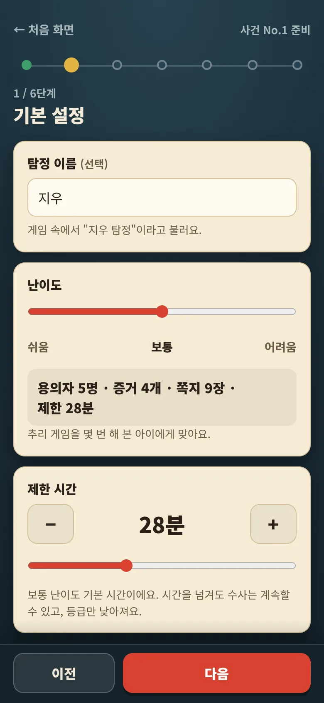
1기본 설정
탐정 이름에 아이 이름을 적으면 게임이 "지우 탐정"처럼 불러 줘요. 비워 두면 그냥 "탐정"이에요.
난이도를 고르면 용의자·증거·쪽지 수와 제한 시간이 함께 바뀌어요. 처음이면 쉬움, 추리 게임을 몇 번 해 봤으면 보통이 맞아요.
제한 시간은 − +로 10~60분 사이에서 바꿀 수 있어요. 시간을 넘겨도 수사는 계속되고 등급만 낮아져요.
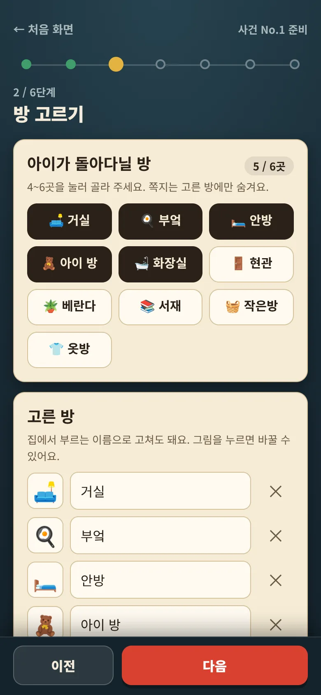
2방 고르기
아이가 돌아다닐 방을 4~6곳 눌러 골라요. 쪽지는 고른 방에만 숨겨요. 이름은 집에서 부르는 대로 고쳐도 되고, 목록에 없는 방은 "직접 추가"로 넣어요.
아래 간식이 있던 방 (사건 현장)에서 한 곳을 고르거나 알아서 정하기로 둬요. 증거 쪽지 두 장이 그 방의 "간식이 있던 자리" 근처에 숨겨져요.
💡 사건 현장 방의 한 곳(식탁 위 등)을 간식이 있던 자리로 정해 두세요. 빈 간식 통이나 접시를 놓아 두면 더 실감 나요.
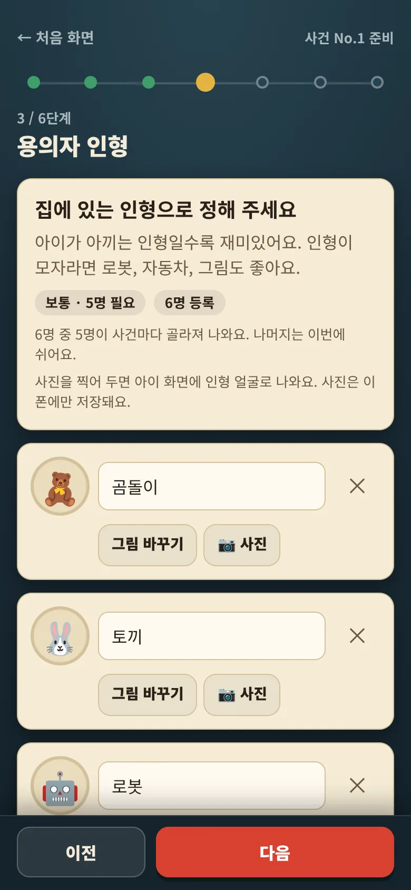
3용의자 인형
집에 있는 인형 이름으로 바꿔 적어요. 아이가 아끼는 인형일수록 재미있어요. + 인형 추가로 8명까지 넣을 수 있어요.
난이도보다 많이 넣으면 사건마다 필요한 수만큼 골라져 나와요. 실제로 나오는 인형은 5단계 맨 위에서 확인해요.
📷 사진으로 인형을 찍어 두면 아이 화면에 그 얼굴이 나와요. 사진은 이 폰에만 저장돼요.
💡 지금 인형들을 한곳에 모아 두면 다음 단계에서 쪽지를 붙이기 쉬워요.
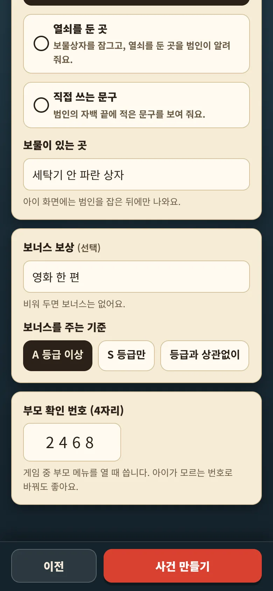
4보물과 보상
아이가 범인을 잡으면 범인이 자백하면서 보물 정보를 알려 줘요. 알려 줄 방식을 넷 중에서 골라요.
- 숫자 자물쇠 번호: 상자를 자물쇠로 잠가 두면 번호를 알려 줘요.
- 보물을 숨긴 곳: 숨긴 곳을 알려 줘요. (예: 세탁기 안 파란 상자)
- 열쇠를 둔 곳: 상자를 잠그고 열쇠 둔 곳을 알려 줘요.
- 직접 쓰는 문구: 적은 문구를 그대로 보여 줘요.
보너스 보상(선택)은 등급 기준을 넘을 때만 공개돼요. 기준은 A 등급 이상 S 등급만 등급과 상관없이 중에서 골라요.
부모 확인 번호는 게임 중 부모 메뉴를 열 때 써요. 처음엔 0000이니 아이가 모르는 번호로 바꿔 두세요. 다 적었으면 사건 만들기를 눌러요.
⚠️ 보물 내용은 아이 화면에 범인을 잡은 뒤에만 나와요. 그 전에 아이가 이 준비 화면을 보지 않게 해 주세요.
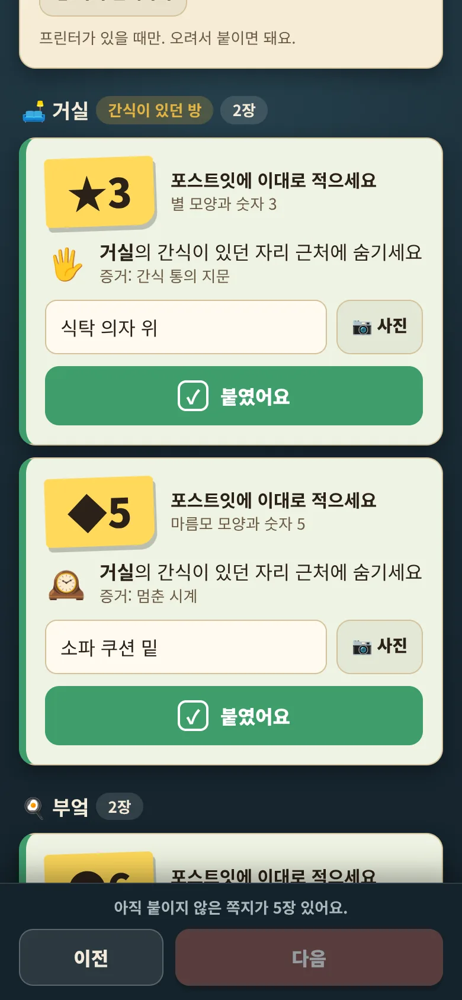
5쪽지 붙이기
쪽지 카드가 방별로 묶여 나와요. 카드 하나마다 이렇게 해요.
- 노란 칸의 기호(예: ★3)를 포스트잇에 크게 적어요. 모양과 숫자 하나씩이에요.
- 용의자 쪽지: 그 인형에 붙이고, 안내한 방에 인형을 둬요.
증거 쪽지: 안내한 방 어딘가에 숨겨요. - 숨긴 곳을 칸에 짧게 적거나 📷 사진을 찍어 둬요. 아이가 막히면 게임이 대신 귀띔해 줘요.
- 붙였어요를 눌러 체크해요.
맨 아래 🎁 보물상자 카드에서 간식을 넣은 상자를 숨기고 보물상자를 숨겼어요를 눌러요. 쪽지와 보물상자를 모두 체크해야 다음으로 넘어가요.
- 프린터가 있으면 🖨 쪽지 인쇄하기로 기호만 A4 한 장에 뽑아 오려 써도 돼요. 어디에 둘지는 인쇄되지 않고 화면에만 보여요.
- 범인이 누구인지는 맨 아래 🔒 정답 보기 (부모만)에 있어요.
- 다른 범인으로 바꾸고 싶으면 위쪽 다른 사건으로 바꾸기를 눌러요. 기호가 모두 바뀌어요.
⚠️ 이미 쪽지를 붙인 뒤에 난이도, 방, 인형 수, 사건 현장을 바꾸면 기호가 모두 달라져서 처음부터 다시 붙여야 해요. 이름만 고치는 건 괜찮아요.
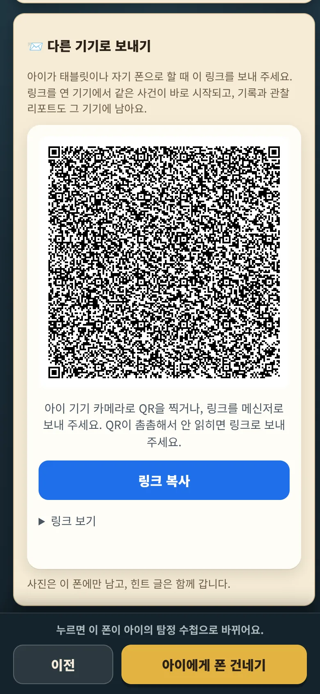
6관찰 준비, 그리고 폰 건네기
관찰자 예측(선택) 세 가지를 눌러 둬요. 수사가 얼마나 걸릴지, 무전 힌트를 몇 번 쓸지, 무엇을 먼저 찾을지예요. 끝나면 실제와 비교해 줘요.
지켜보는 법에는 끼어들지 않기와 비상시 확인 번호가 적혀 있어요.
이제 아이에게 넘겨요.
- 이 폰으로 할 때: 아래 아이에게 폰 건네기를 누르고 폰을 아이에게 건네요. 화면이 아이의 탐정 수첩으로 바뀌어요.
- 아이 태블릿이나 아이 폰으로 할 때: 📨 다른 기기로 보내기를 펼쳐요. 아이 기기 카메라로 QR을 찍거나, 링크 복사(폰에 따라 보내기도 있어요)로 메신저에 보내요. 링크를 연 기기에서 같은 사건이 바로 시작돼요.
⚠️ 다른 기기로 보낼 때 사진은 가지 않아요. 인형은 그림으로 보이고, 숨긴 곳 힌트는 글만 함께 가요. 진행, 기록, 관찰 리포트는 링크를 연 기기에 남아요.
💡 나중에 보내도 돼요. 부모 대시보드의 우리 집 탐정 칸에서 📨 아이에게 보내기를 누르면 같은 QR과 링크가 나와요. 이 기기에서 바로 하려면 이 기기에서 시작을 눌러요.
2게임 진행
여기부터는 아이 혼자 해요. 부모는 끼어들지 않고 지켜봐 주세요. 막히면 아이가 게임 안의 무전으로 힌트를 받아요.
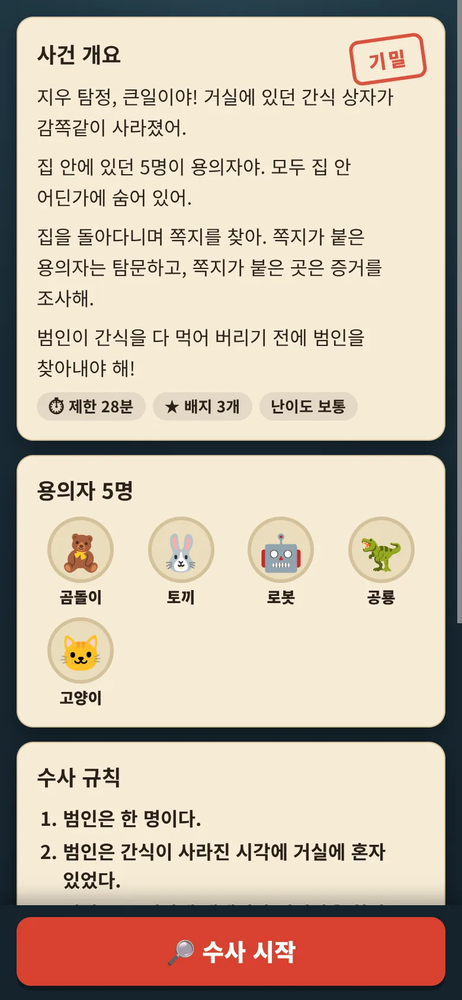
1사건 파일과 브리핑
처음엔 "사건 파일" 표지가 나와요. 아이가 표지를 누르면 브리핑이 열려요. 사건 개요, 용의자, 수사 규칙, 하는 법이 차례로 있어요.
수사 규칙은 네 가지예요.
- 범인은 한 명이다.
- 범인은 간식이 사라진 시각에 사건 현장에 혼자 있었다.
- 범인은 그 시각에 대해서만 거짓말을 한다.
- 범인이 아니면 사실만 말한다. 증거는 거짓말을 하지 않는다.
아이가 🔎 수사 시작을 누르는 순간부터 시계가 가요.
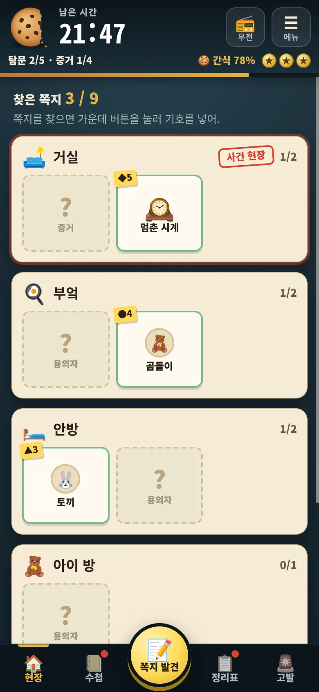
2집 안을 돌며 쪽지 찾기
아이는 폰을 들고 방을 돌아다니며 포스트잇을 찾아요. 현장 탭에 방마다 쪽지 칸이 있어서 어느 방에 몇 장 남았는지 보여요. 쉬움과 보통에서는 물음표 칸에 용의자인지 증거인지도 적혀 있어요.
위쪽 줄이 긴장을 만들어요.
- 남은 시간과 쿠키: 범인이 간식을 먹어 치우는 만큼 쿠키와 "간식 %"가 실제로 줄어요. 음악도 점점 빨라져요.
- ★ 탐정 배지 3개: 고발 기회예요.
- 탐문 · 증거: 지금까지 마친 수예요.
⚠️ 시계는 실제 시각으로 흘러요. 폰 화면이 꺼지거나 창을 닫아도 시간은 가요. 잠깐 멈출 일이 생기면 ☰ 메뉴 → ⏸ 잠깐 멈춤을 눌러요.
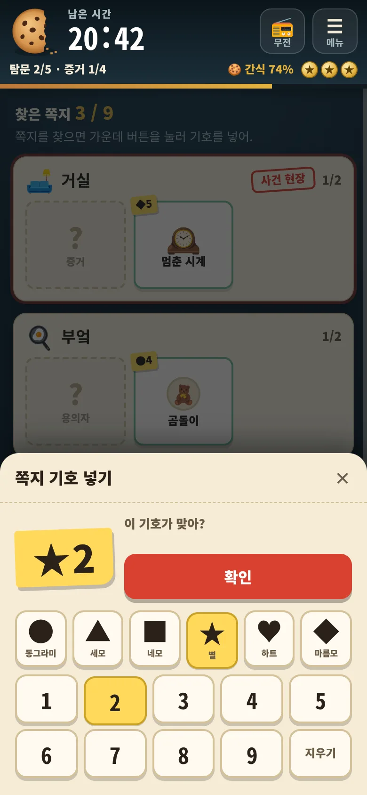
3쪽지 기호 넣기
쪽지를 찾으면 아래 가운데 📝 쪽지 발견을 눌러요. 쪽지에 적힌 모양(동그라미, 세모, 네모, 별, 하트, 마름모)과 숫자(1~9)를 고르고 확인을 눌러요.
기호가 맞으면 인형 쪽지는 탐문, 방에 숨긴 쪽지는 증거 조사 화면이 열려요. 찾은 쪽지는 현장 탭의 칸을 눌러 언제든 다시 열 수 있어요.
💡 없는 기호를 세 번 연달아 넣으면 15초 동안 입력이 잠겨요. 아무 기호나 찍어 보는 걸 막는 장치예요.
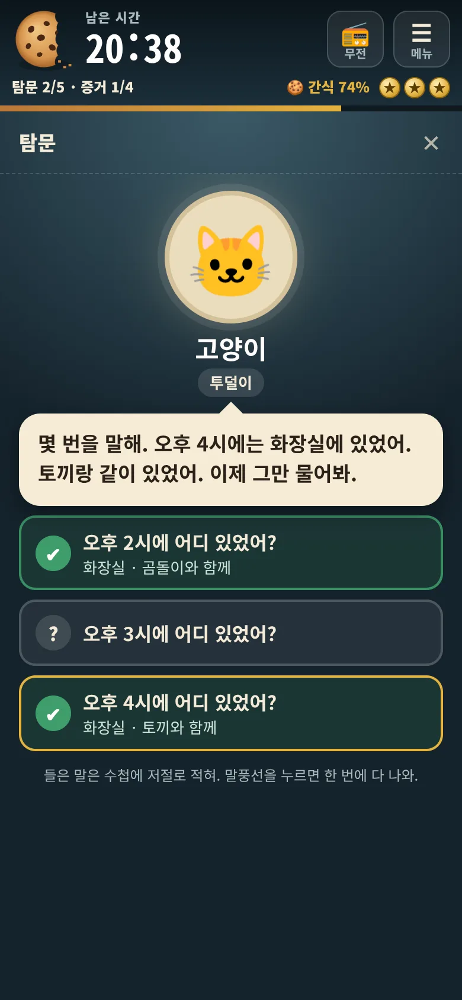
4용의자 탐문
인형마다 오후 2시, 3시, 4시에 어디 있었어? 세 가지를 물어요. 인형은 어느 방에 있었는지, 누구와 함께였는지 말해 줘요. 인형마다 투덜이, 겁쟁이 같은 말투가 있어요.
들은 말은 수첩과 정리표에 저절로 적혀요. 범인도 똑같은 모습으로 대답해서 화면만 보고는 티가 나지 않아요.
💡 난이도가 높을수록 "누가 또 있었는지는 기억이 안 나" 같은 짧은 대답이 많아져요.
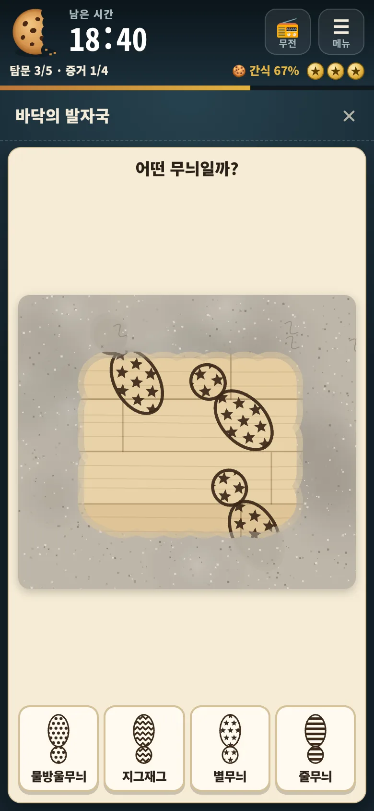
5증거 조사
증거 쪽지를 넣으면 증거 소개가 나오고, 🔎 조사 시작을 누르면 손으로 조사하는 짧은 장면이 열려요. 다 풀면 새로운 사실 카드가 나오고 ✎ 수첩에 적기로 닫아요.
| 증거 | 아이가 하는 일 |
|---|---|
| 🕰️ 멈춘 시계 | 유리 조각을 쓸어 내고 시각을 읽어요. 보통부터는 거울에 비친 시계예요. 간식이 사라진 시각을 알려 줘요. |
| 👣 발자국 | 먼지를 문질러 닦고 같은 무늬를 골라요. |
| 🖐️ 지문 | 붓으로 문질러 지문을 살리고, 기준 지문과 비교해 골라요. |
| 🍫 초코 손자국 | 불빛을 비춰 숨은 손자국을 찾아요. 가짜 얼룩이 섞여 있어요. |
| 📹 CCTV | 다이얼 두 개를 맞추고 화면 속 사람 수를 골라요. |
| 🧾 찢어진 출입 기록 | 조각 두 개를 눌러 자리를 바꿔 가며 맞춰요. |
💡 사건 현장의 시계를 먼저 조사하면 정리표에 사건 시각이 표시돼서 추리가 쉬워져요. 어려움에는 사건과 상관없는 함정 증거가 하나 섞여요.
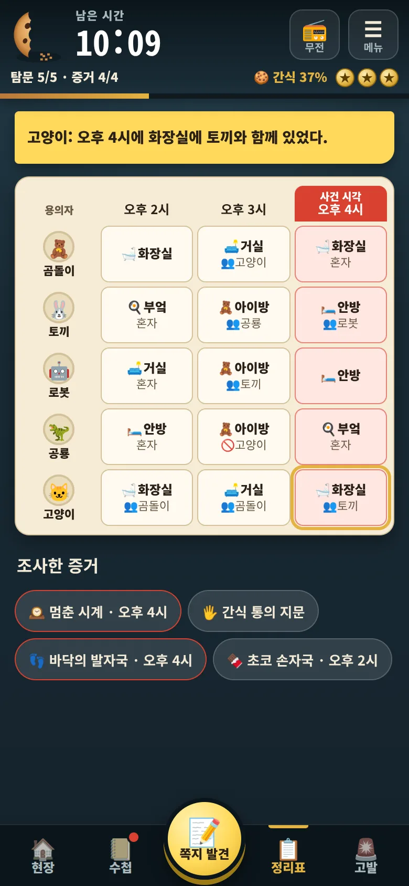
6수첩과 정리표로 추리하기
수첩 탭에는 수사 규칙, 용의자마다 발자국 무늬와 지문 모양, 들은 진술, 조사한 증거가 모여 있어요. 줄을 누르면 ✔ 믿음 → ✖ 의심 표시를 할 수 있어요.
정리표 탭은 용의자 × 세 시각 표예요. 칸을 누르면 전체 문장이 위에 나와요. 시계를 조사한 뒤에는 사건 시각 열이 빨갛게 빛나요.
그림의 예에서는 곰돌이가 "오후 4시에 화장실에 혼자 있었다"고 했는데, 고양이는 "그 시각 화장실에 토끼와 함께 있었다"고 해요. 둘 중 하나는 거짓말이에요.
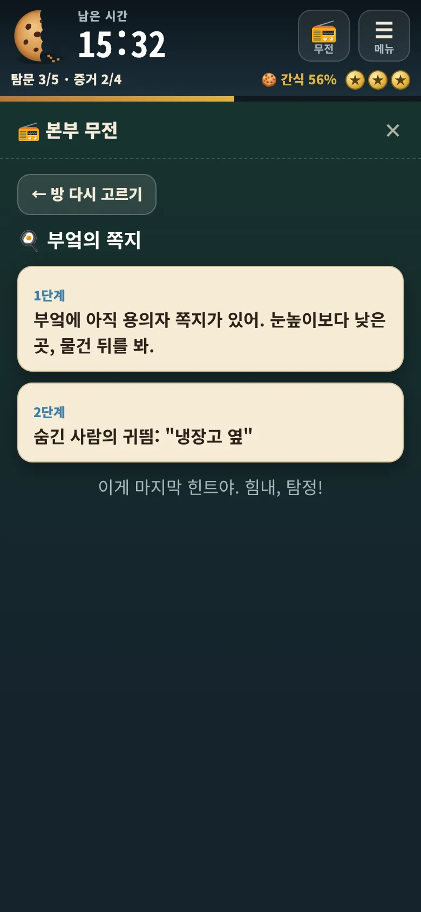
7막히면 무전 힌트
아이가 위쪽 📻 무전을 누르면 두 갈래가 나와요.
- 🔍 쪽지를 못 찾겠어: 방을 고르면 1단계는 일반 안내, 2단계는 준비 때 적은 숨긴 곳 글(글이 없으면 사진 가운데 부분)이에요. 사진을 찍어 둔 쪽지는 3단계에서 사진 전체를 보여 줘요.
- 🧠 추리가 막혔어: 무엇을 비교하면 좋을지 3단계로 점점 분명하게 알려 줘요.
힌트를 들을 때마다 남은 시간이 줄어요. 1단계 0:20, 2단계 0:40, 3단계 1:00이에요. 한 번 들은 힌트는 다시 봐도 공짜예요.
💡 한동안 진전이 없으면(쉬움 3분, 보통 4분, 어려움 5분) 무전 버튼이 깜빡이며 힌트를 권해요. 부모가 대신 알려 주지 않아도 돼요.
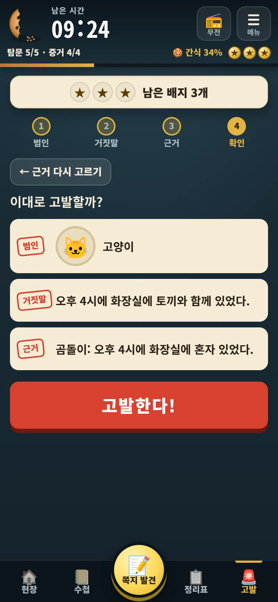
8범인 고발
고발 탭에서 범인 → 거짓말 → 근거 → 확인 차례로 골라요. 범인의 진술 중 거짓말 하나와, 그 말이 거짓이라는 근거(다른 인형의 진술이나 증거) 하나를 함께 대야 해요. 마지막에 고발한다!를 눌러요.
| 결과 | 어떻게 되나 |
|---|---|
| 범인과 근거 모두 맞음 | "범인 검거"! 결말 화면으로 넘어가요. |
| 범인은 맞지만 근거가 틀림 | "증거 불충분". 범인이 발뺌해요. 시간 −0:45, 배지는 그대로예요. |
| 결백한 인형을 고발 | "잘못된 고발". 배지 하나와 시간 −2:00을 잃어요. |
틀리면 다시 수사하기로 돌아가요. 배지를 다 쓰면 1분 동안 고발할 수 없고, 그 뒤에 배지 하나를 돌려받아요.
💡 제한 시간이 지나도 게임은 끝나지 않아요. "⏰ 시간 초과!"가 뜨면 계속 수사하기로 이어 가고, 등급만 B 이하가 돼요.
3끝난 뒤
범인을 잡으면 결말 화면을 아이가 한 장씩 넘겨 봐요. 마지막 장에서 아이가 폰을 돌려주면 부모가 관찰 리포트를 봐요.
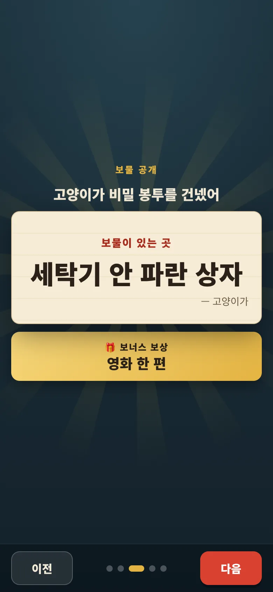
1자백, 등급, 보물, 신문
결말은 다섯 장이에요. 다음을 눌러 넘겨요.
- 범인의 자백: 범인이 거짓말을 털어놓아요.
- 수사 결과: 등급(S, A, B, C)과 점수, 깎인 이유가 나와요.
- 보물 공개: 봉투를 누르면 4단계에 적은 보물 정보가 나와요. 보너스 보상은 기준 등급을 넘었을 때만 보이고, 못 넘으면 잠긴 채로 "다음 사건에서 도전!"이라고 나와요.
- 오늘의 신문: 사건을 기념하는 "우리 집 일보" 1면이에요. 사진으로 저장으로 간직할 수 있어요.
- 수사 끝!: "부모님께 폰을 돌려주자"가 나와요.
아이는 보물 정보를 보고 실제 보물상자를 찾으러 가요.
| 등급 | 점수 (100점에서 깎기) |
|---|---|
| S 명탐정 | 90점 이상 |
| A 뛰어난 탐정 | 75점 이상 |
| B 끈기 있는 탐정 | 55점 이상 (시간을 넘기면 B가 최고) |
| C 포기하지 않은 탐정 | 55점 아래 |
깎이는 점수: 잘못된 고발 12점, 증거 불충분 5점, 힌트 1·2·3단계 4·7·10점, 조사 중 틀린 선택 1점씩(최대 5점), 제한 시간의 70%를 넘기면 최대 15점, 시간 초과 10점.
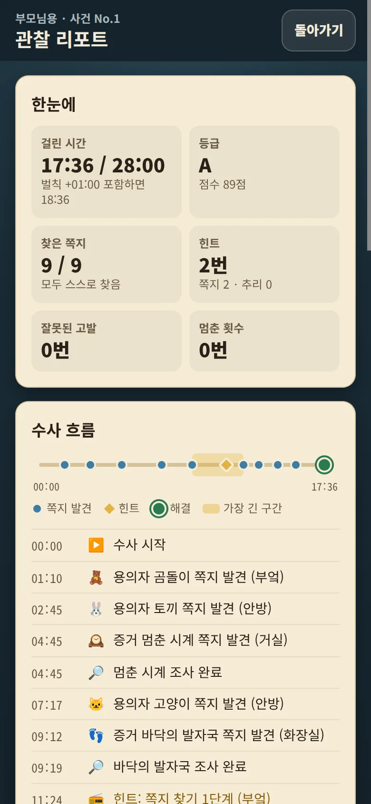
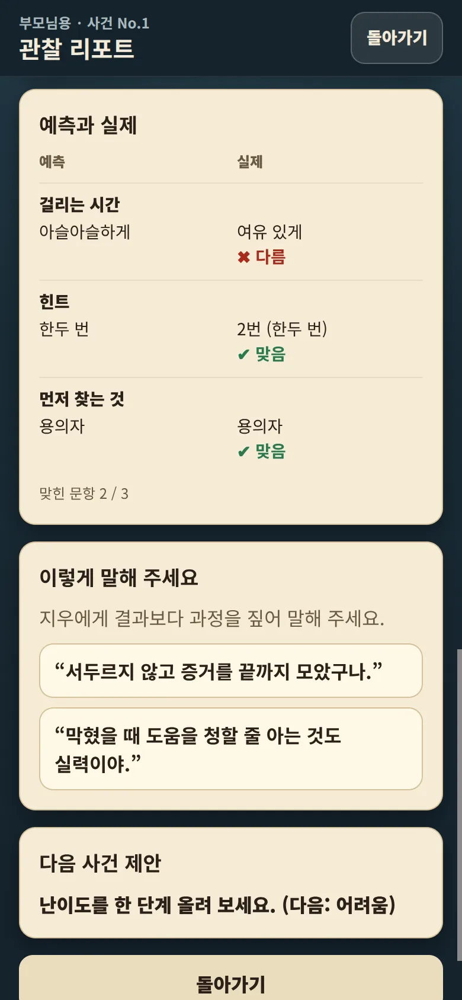
2관찰 리포트 (부모)
마지막 장의 관찰 리포트 보기 (부모)를 눌러요. 아이가 어떻게 풀었는지 기록에 남은 것만 보여 줘요.
- 한눈에: 걸린 시간, 등급, 찾은 쪽지, 힌트, 잘못된 고발, 멈춘 횟수
- 수사 흐름: 쪽지를 찾고 조사하고 힌트를 들은 시각
- 가장 오래 걸린 구간과 풀이 방식
- 예측과 실제: 6단계에서 고른 예측이 맞았는지
- 이렇게 말해 주세요: 결과보다 과정을 짚는 칭찬 문장
- 다음 사건 제안: 난이도를 올릴지 그대로 둘지
리포트와 기록은 게임을 한 기기에 남아요. 나중에 게임 첫 화면의 결과와 관찰 리포트 다시 보기로 다시 볼 수 있고, 아래 "지난 사건 기록"에 등급이 쌓여요.
3다시 할 때
준비 화면을 다시 열면 첫 장에 지난번 방과 인형 그대로 새 사건 만들기가 나와요. 방, 인형, 사진, 보물 방식은 그대로 두고 범인과 쪽지 기호만 새로 정해요.
기호가 바뀌니 포스트잇은 새로 적어 붙여야 해요. 보물 숨긴 곳도 다시 적는데, 지난번과 같으면 그대로 쓰기를 눌러요.
?막혔을 때
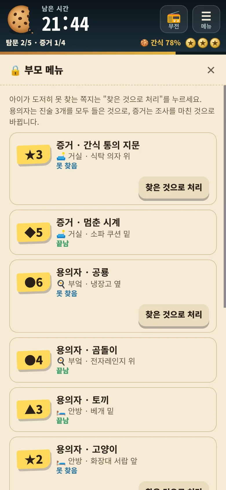
🔒게임 안의 부모 메뉴
비상시에만 써요. 수사 화면 위쪽 ☰ 메뉴 → 🔒 부모 메뉴를 누르고 4단계에서 정한 확인 번호 4자리를 넣어요.
- 쪽지마다 기호, 방, 적어 둔 숨긴 곳, 찾았는지가 나와요.
- 찾은 것으로 처리: 그 쪽지를 찾은 것으로 바꿔요. 용의자는 진술 3개를 모두 들은 것으로, 증거는 조사를 마친 것으로 돼요.
- 수사 끝내고 보물 공개: 자백 없이 바로 보물을 보여 줘요. 등급은 C로 남아요.
⚠️ 이 화면에는 쪽지 위치가 보여요. 아이에게 보이지 않게 열어 주세요.
쪽지가 떨어지거나 없어졌어요
부모 메뉴를 열어 그 쪽지의 찾은 것으로 처리를 눌러요. 아이는 그 쪽지 내용을 바로 볼 수 있어요.
아이가 쪽지를 도저히 못 찾아요
대신 알려 주지 말고 📻 무전 → 🔍 쪽지를 못 찾겠어를 권해 주세요. 준비 때 숨긴 곳 글이나 사진을 남겼다면 2·3단계에서 그대로 귀띔해 줘요.
추리가 막혀서 고발을 못 해요
📻 무전 → 🧠 추리가 막혔어가 1단계부터 무엇을 비교할지 알려 줘요. 정리표의 사건 시각 열에서 서로 맞지 않는 말을 찾는 게 핵심이에요.
전화가 와서 잠깐 멈춰야 해요
☰ 메뉴 → ⏸ 잠깐 멈춤을 누르면 시계가 멈춰요. 돌아오면 ▶ 다시 시작을 눌러요. 멈추지 않고 폰을 꺼 두면 그동안에도 시간이 흘러요.
기호를 넣는데 눌리지 않아요
없는 기호를 세 번 연달아 넣으면 15초 동안 잠겨요. 판에 남은 초가 보이니 기다렸다가 다시 넣으면 돼요.
배지를 다 써서 고발이 안 돼요
"서장님께 보고 중…"이 끝나는 1분 뒤에 배지 하나가 돌아와요. 그동안 수첩과 정리표를 다시 보게 해 주세요.
시간이 다 됐어요
게임은 끝나지 않아요. 계속 수사하기를 눌러 이어 가면 되고, 등급만 B 이하가 돼요.
확인 번호를 잊었어요
준비 화면(게임 첫 화면의 새 사건 준비하기 (부모))의 4단계 "보물과 보상"과 6단계 "지켜보는 법"에 번호가 나와요. 아이가 없는 곳에서 확인하세요.
다른 기기로 보냈더니 인형 사진이 안 나와요
사진은 준비한 기기에만 남아요. 다른 기기에서는 고른 그림으로 보여요. 사진까지 쓰려면 준비한 기기를 아이에게 건네세요.
범인이 누구인지 확인하고 싶어요
준비 화면 5단계 "쪽지 붙이기" 맨 아래 🔒 정답 보기 (부모만)에 범인, 거짓말, 거짓말을 깨는 근거가 있어요.